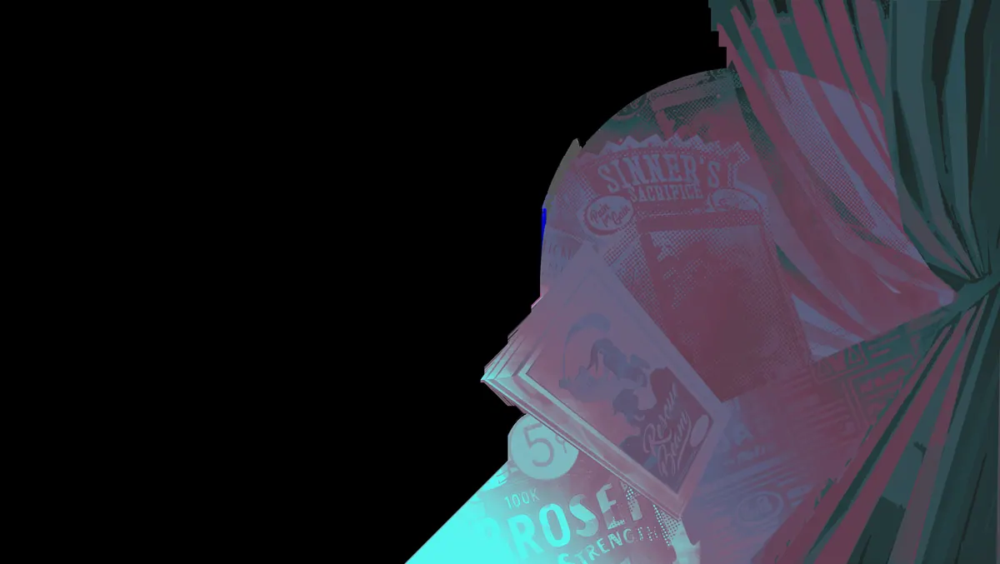

Truque Deslumbrante Dazzling Trick Cria uma barreira protetora que, ao ser destruída, silencia inimigos próximos e causa dano baseado na barreira. Adagas Radiantes Radiant Daggers Invoca um raio de luz que explode após um instante, causando dano espiritual na área e acumulando bônus de dano espiritual ao acertar heróis. Maravilha Brilhante Shining Wonder Lança uma esfera de luz que causa dano espiritual e retarda inimigos, depois quica entre alvos próximos priorizando heróis.Mística de apoio, boa para dar fôlego ao time.
História
Mesmo num mundo de magia, algumas coisas ainda são raras e incomuns. Então, o que um unicórnio deve fazer? Anunciar sua presença ao mundo e potencialmente ter caçadores furtivos querendo cortar seu chifre? Ou se esconder à vista de todos em um show paralelo em Coney Island, onde a maioria das pessoas presumiria que sua aparência era apenas parte de uma atuação?
Ao longo dos anos, "The Dazzling Celeste" tornou-se uma das atrações mais populares de Coney, e embora os aplausos de uma plateia entusiasmada sejam apreciados; o que a faz acordar de manhã é a família que ela construiu no trabalho.
Keruba, a Sereia.
Lenny idiota.
Asa de galinha.
Ted.
Este era o seu povo. Então, quando descobriu que um dos seus vendeu parte de sua alma para cobrir uma dívida de jogo, Celeste sabia que era hora de sair das sombras e fazer o que fosse necessário para recuperá-la. Revelar seu poder aos Patronos é um risco? Sim. Mas esse é o problema de amanhã... a família dela precisa de ajuda hoje.
História oficial do jogo, traduzida automaticamente para o português.
Números reais
Habilidades
Atinge inimigos num cone com luz, fazendo-os sofrer dano espiritual dos ataques dela e dando-lhe roubo de vida espiritual.
Cria uma barreira protetora que, ao ser destruída, silencia inimigos próximos e causa dano baseado na barreira.
Invoca um raio de luz que explode após um instante, causando dano espiritual na área e acumulando bônus de dano espiritual ao acertar heróis.
Lança uma esfera de luz que causa dano espiritual e retarda inimigos, depois quica entre alvos próximos priorizando heróis.
Builds mais usadas
43.122 partidas registradas com esta build.
Regeneração Extra (800) · Rodadas de alta velocidade (800) · Regeneração Mística (800) · Expansão Mística (800) · Regeneração Radiante (3.200) · Supressor (1.600) · Impulsionador de cura (1.600) · Medalhão Restaurador (1.600) · Pulso de Tormento (3.200) · Rodadas de Abertura (1.600)
39.296 partidas registradas com esta build.
Rodadas de alta velocidade (800) · Regeneração Extra (800) · Rodadas de Abertura (1.600) · Regeneração Mística (800) · Regeneração Radiante (3.200) · Supressor (1.600) · Impulsionador de cura (1.600) · Medalhão Restaurador (1.600) · Healbane (1.600) · Emblema do Encantador (1.600)
16.960 partidas registradas com esta build.
Regeneração Extra (800) · Rodadas de alta velocidade (800) · Explosão Mística (800) · Expansão Mística (800) · Regeneração Mística (800) · Regeneração Radiante (3.200) · Impulsionador de cura (1.600) · Medalhão Restaurador (1.600) · Blindagem Espiritual (1.600) · Rito de Cura (800)
Confrontos reais
 Pocket — 54.7% de vitória
Pocket — 54.7% de vitória Shiv — 54.1% de vitória
Shiv — 54.1% de vitória Mirage — 53.6% de vitória
Mirage — 53.6% de vitória Viscous — 53.5% de vitória
Viscous — 53.5% de vitória Silver — 53.4% de vitória
Silver — 53.4% de vitória Paradox — 53.3% de vitória
Paradox — 53.3% de vitória
 Paige — 41.7% de vitória
Paige — 41.7% de vitória Rat King — 41.8% de vitória
Rat King — 41.8% de vitória Graves — 42.4% de vitória
Graves — 42.4% de vitória Victor — 43.4% de vitória
Victor — 43.4% de vitória Seven — 43.7% de vitória
Seven — 43.7% de vitória Haze — 44.8% de vitória
Haze — 44.8% de vitória
Ver a página de counters do Celeste
O que upar primeiro
Nível por nível, na ordem que os jogadores mais usam em partidas de verdade. A porcentagem mostra quantos escolheram aquela habilidade naquele nível.
Melhores duplas
Heróis que mais ganham jogando junto com ele, em partidas reais (pelo menos 1.500 partidas juntos).
- Graves56,0%
- Rat King55,9%
- Paige54,3%
- Haze53,1%
- Seven52,8%
 Mina43,6%
Mina43,6% Solomon43,7%
Solomon43,7%- Pocket43,8%
Rota (lane)
Na rota, cada lado joga em dupla. Estes números são de confrontos reais: a diferença de almas é medida com o jogo já começado, então almas no verde significa que ele costuma estar na frente.
 Dynamo — 37,6% de vitória −192 almas (519 partidas)
Dynamo — 37,6% de vitória −192 almas (519 partidas)- Paige — 41,5% de vitória −662 almas (1.848 partidas)
- Rat King — 42,1% de vitória −940 almas (15.351 partidas)
- Seven — 42,5% de vitória −473 almas (2.161 partidas)
- Haze — 42,6% de vitória −915 almas (3.687 partidas)
- Graves — 43,1% de vitória −127 almas (6.092 partidas)
 Baba — 45,2% de vitória −558 almas (1.387 partidas)
Baba — 45,2% de vitória −558 almas (1.387 partidas) Violet — 46,2% de vitória −522 almas (305 partidas)
Violet — 46,2% de vitória −522 almas (305 partidas)
- Silver — 58,8% de vitória −350 almas (575 partidas)
 Billy — 56,8% de vitória +57 almas (913 partidas)
Billy — 56,8% de vitória +57 almas (913 partidas) Rem — 56,6% de vitória −442 almas (2.790 partidas)
Rem — 56,6% de vitória −442 almas (2.790 partidas)
Histórico de win rate
08/02: 49.5% → 08/03: 46.1% → 05/04: 46.3% → 03/05: 48.6% → 31/05: 47.2% → 28/06: 48.0% → 26/07: 50.1% → 23/08: 52.0% → 20/09: 49.4% → 18/10: 48.5%